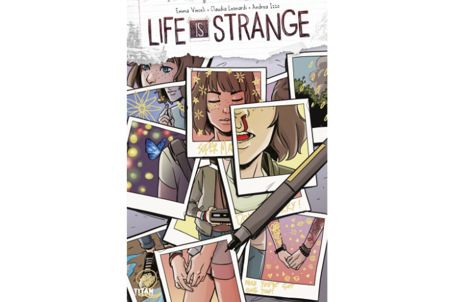
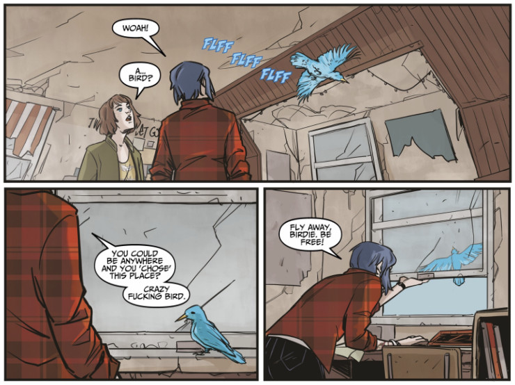
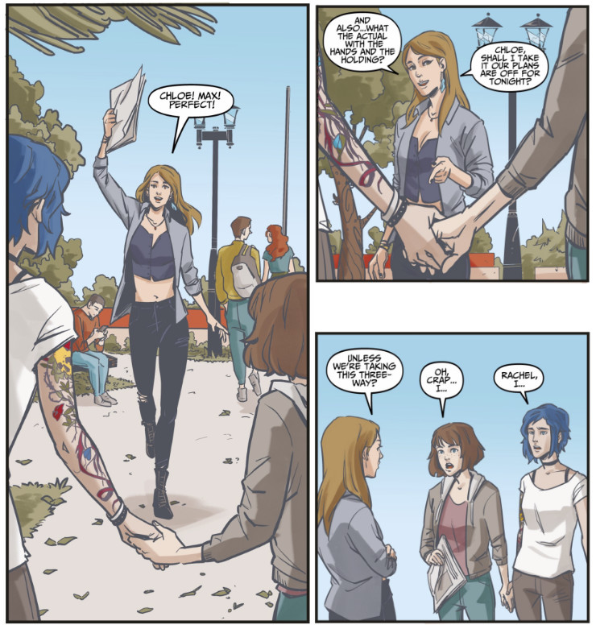
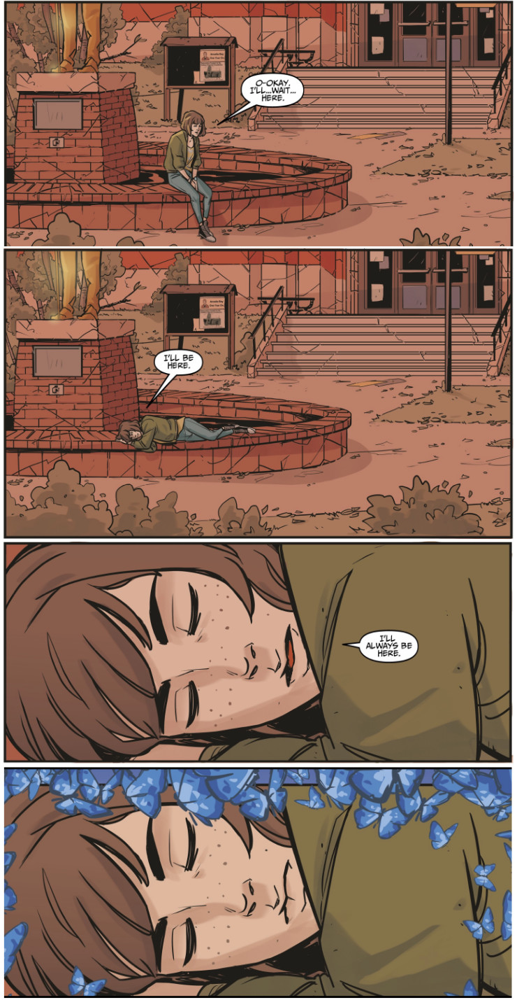

Life is Strange comic book vol. 3 (Dust #3)
The second issue of Life is Strange comic book ended with a cliffhanger. I was seriously worried what would happen in the next volume and how Max would solve the mystery of the phenomena she had experienced. Will she be able to stop timelines from interlacing?
Here you can find all my reviews of the comic book. As previously, this review had been written before I read the fourth issue, so I still don’t know how this story ended.
I opened vol. 3 with a heavy heart and the cover was not reassuring. It showed a set of Polaroids capturing Max in different places and in different positions. There were few shots of her face (one with a trace of blood under her nose), one of Max holding William’s camera, one of the girls holding their hands. In that one Max’s forearm was overlaid with a golden marker, something in a shape of a flower (rose, probably) decorating her skin. In the same golden letters someone wrote below now you’ve got one too!, adding dozens of hearts, stars and smiley faces to the picture. When I looked carefully I realised that nearly every Polaroid was decorated or signed in a similar way, which indicated that it must have been Chloe’s doing. That was really cute, as she scribbled SUPER MAX under a photo of Max’s face with closed eyes, in bold golden letters, adding stars around Max’s head. But why there were no Polaroids of Chloe, save for a single frame where both girls held their hands? Also, one photograph showed a blue butterfly perching on Max’s shoulder. I definitely don’t like where this is going…
 After playing Life is Strange and reading this comic book I will never be able to look at Polaroids in the same way again
The recap pages were useful, but when I saw a name “Diana Ward” in the description, I sighed in disbelief. Oh man, are you cereal? Why do they always have to make embarrassing typos in characters’ names? The same thing happened in Welcome to Blackwell Academy, there was a typo in Max’s name, supposedly written by Max herself! Is it that hard to proofread the whole thing before the release?
The first page of the story normally contained Max’s thoughts and retrospections with a lot of butterflies, but this time there is nothing but the butterflies, flying calmly in the dark. I guess that’s because, as fas as we know, Max is unconscious at the beginning of this issue. The next page, however, forced me to use the internal supplies of patience I didn’t know I possessed. The High Seas got back again, in a short interlude, composing a new song and wondering how Max and Chloe handle seeing Arcadia Bay again. I don’t like the band. They annoy me, they don’t fit into my vision of Life is Strange. But I have to admit, the lyrics of their song–inspired by Max and Chloe–are powerful.
They say forever is a long time,
but I don’t hear a word they say.
They say forever is a long time,
but I guess I must have found a way
to bend the rules and the tides of time;
forever starts the day I make you mine.
With so much there between us, so many things unsaid,
there are words I want to say to you
if I could only clear my head.
Can we forget about the past and draw a line?
Forever starts the day I make you mine.
The next scene evoked so many emotions. Apparently Chloe had carried unconscious Max to her old room and looked after her while Max was recovering from the previous vision. Seeing Chloe’s room destroyed, the window broken, most of the posters torn apart, the globe lamp fallen, it was a difficult experience. But at the same time I felt that despite all the destruction, it is still Chloe’s room. Her punk style was still visible and even the tornado could not take that away from her. When Max woke up Chloe explained everything to her. I especially appreciated one thing she said.
While you were asleep I spent some time in the house. My house. I feel like… I know my parents didn’t choose to leave me, but it’s starting to sink in now that they really are both gone. Maybe I needed this chance to say goodbye. To “process” or whatever bullshit word they call it.
I’m glad that Life is Strange comic book has finally tackled this issue. As I mentioned in previous reviews, this adds to the realism of the story and makes it more believable. It is hopeful that Chloe chose to accept the loss of Joyce instead of hiding behind the wall of anger and frustration as she did after William had passed away. Maybe that’s because she has Max at her side now, maybe that’s because seeing the storm and its horrors changed her. Nevertheless, Chloe seems to be more mature, ready to handle whatever the world can throw at her.
Suddenly a blue jay appeared in Chloe’s room, trying to get out through a broken window. I appreciated this little scene, a reminder of the moment when Max had saved a blue jay (maybe the very same one?) in Joyce and David’s bedroom in original Life is Strange. This time it was Chloe who set the bird free. There was something symbolic in that act, just like if by letting the bird fly away Chloe has also accepted that her mom is gone, letting the sorrow be carried away on blue, feathered wings.
 “You’ve been resurrected, birdie. Fly, be free!”
Later that day girls arrived at the Blackwell Academy, or what was left of it. There was a lot of nostalgia to handle, both for them and me. And of course, weird things started happening again. Max met Warren, alive and well. Warren, who knew about the storm and people who died, not Warren from a timeline where there was no storm. That was super-weird. In the previous issue of the comic book Joyce told Max that there was no storm after Chloe died, while in Warren’s timeline both storm and Chloe’s death happened. Does it matter that Max is seeing more than one alternative timeline?
One comment that Warren made during his dialogue with Max is worth mentioning:
(…) I feel like I could look into those windows and see the old gang sat in classes like nothing has changed. (…) Not that, you know, I ever make habits of looking through windows at people or…
This obviously refers to an easter egg at the beginning of episode 2 of Life is Strange, when Max could see Warren secretly starring at windows of her dorm room. That was one of things that made me lost all sympathy I might have left for this guy. His behaviour was downright creepy. But let’s go back to the comic book. Chloe has realised that Max is talking to someone that’s not there, and when she took Max’s hand to join her vision, something bad happened.
Chloe didn’t join Max’s vision like she did in Two Whales diner, but instead her head started to hurt really bad and she got a nosebleed, just like Max. The vision was gone and both girls found themselves alone in front of the Blackwell Academy. But then another vision started and someone was approaching them with a newspaper in hand, smiling and waving.
Rachel Amber.
That was a whole new level of weirdness. On a scale of 1 to 10 I’d rate it as 12 and a half. It was yet another timeline or alternative reality, or whatever you call it. Rachel told Max and Chloe that Jefferson, after being fired from Blackwell for stealing school supplies (some duct tape for his Dark Room, perhaps?) got arrested in another school after he slept with one of his students.
 Rachel in the alternative timeline was as tactful and diplomatic as in the original one
When the vision came to past, Chloe asked Max if she had been jumping, and then girls checked their watches. I was wondering since the vol. 1 why they started wearing watches, especially that they weren’t exactly in the girls’ style, and now one little mystery was finally explained. Apparently Max and Chloe periodically checked their watches to make sure they remained synced which would mean Max hasn’t been moving at a different pace through time, i.e. using her powers or photojumping.
Chloe needed some time alone to process things after seeing Rachel (or her projection, or her ghost, or her alternative self?), so she took a few steps away from Max, who was still sitting at the edge of a fountain… with another Chloe. Okay, now my weird-o-meter showed 15. Suddenly both Chloes disappeared and Max was left alone, slowly succumbing to slumber or some malady.
 This was the most scaring scene in the third issue of Life is Strange comic book
When Max woke up Warren was sitting next to her. Warren she had met before, the one who remembered both the storm and Chloe’s death. He was aware that Max did not belong to his timeline, and explained to her what possibly happened. That was insanely crazy (weird-o-meter showed err and stopped working altogether), but at least I’m happy I finally got some answers regarding the whole alternating timelines thing. Warren was working on it with another version of Max, the one from his own timeline, and they figured out that these events, flickers, as they called them, they were actually instances of parallel words, occasionally merging or intertwining for a moment of two. So Max was in fact not only travelling through the time, she was travelling to the other worlds. When Max came back to her own world, there was no sign of either Warren or Chloe. And, as always, that’s where the issue had to end.
Wowsers. That was a lot to digest. The whole idea of not only different timelines, but different realities. Now I know what is happening, but I still don’t know why is it happening. I sincerely hope that the final issue of Dust story arc will answer that question. I’m still not over the fact that the ending of original Life is Strange ignored most of the mysteries introduced earlier in the game and left so many questions unanswered. I hope this won’t be the case with Life is Strange comic book. This issue was good, but…
…there is still no Pricefield in sight. On one hand I get it. Not every fan who chose to save Chloe in Life is Strange automatically assumed there was a romantic relationship between the girls and would like to go down that path. On the other hand Amberprice was a kind of a thing in Before The Storm and we are still being denied some most eagerly expected, authentic love between Max and Chloe. To be honest, I don’t expect it will appear in the final issue. I think that creators of the comic book will hold Pricefield just out of reach of the fans, for whatever reason they conjure. Well, I guess I’ll find out soon, reading vol. 4 later today.
Yay!
- Chloe’s room
- saving the blue jay
- Chloe coming to peace with her loss
- Rachel Amber
Nay!
- the whole Seattle interlude with the band
- Warren
- too much red hue in Blackwell scenes
- no Pricefield in sight
Overall summary in three words
nostalgic, red-hued, parallel